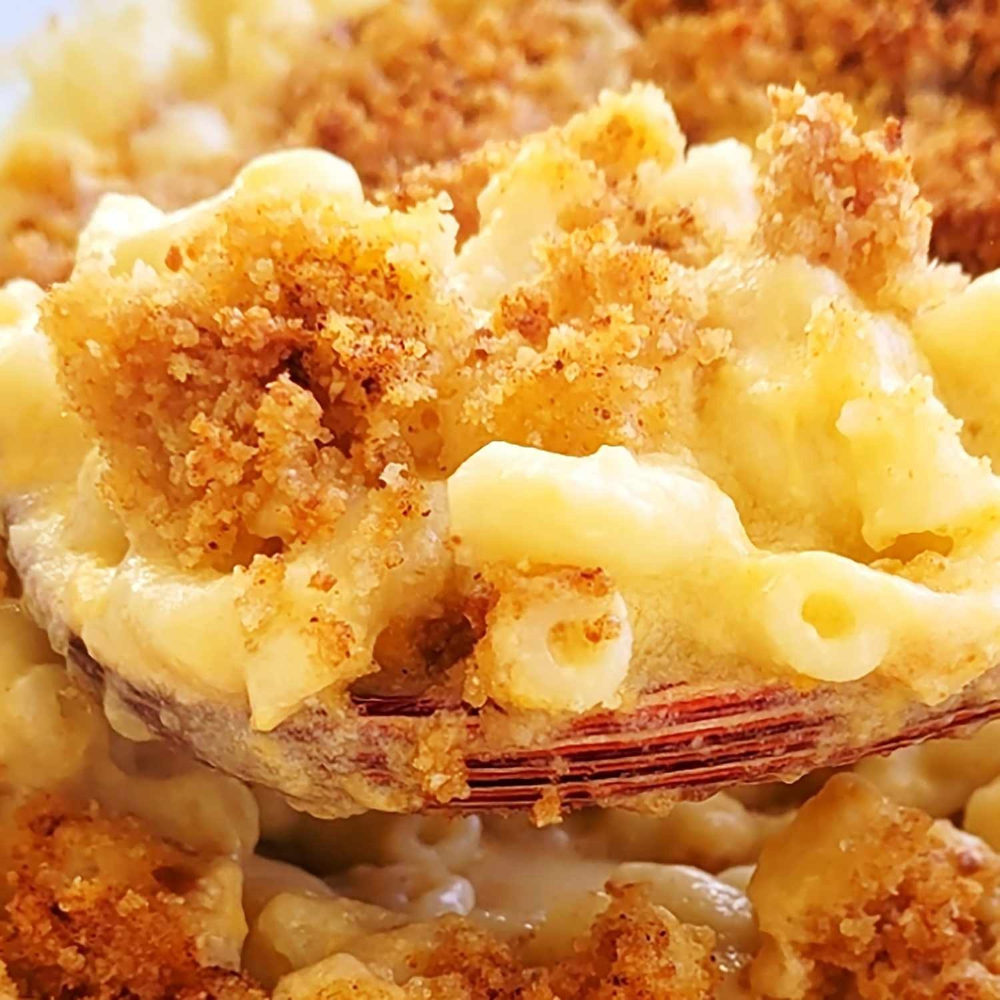

Mac n' Cheese

Description
Macaroni and Cheese (also known as mac and cheese in Canada and the United
States and macaroni cheese in the United Kingdom) is a dish of macaroni and a cheese
sauce, most commonly cheddar sauce.
Ingredients
- Macaroni
- Butter and flour
- Milk
- Cheese
- Seasonings
- Spices and seasonings
- Bread crumbs
Steps
- Cook the noodles: Boil the noodles, drain, and transfer to a prepared
baking dish.
- Prepare the cheese sauce: Make the cheese sauce, pour the sauce over
the noodles, and stir.
- Prepare toppings: Make the topping, spread it over macaroni and cheese,
and sprinkle with paprika.
- Bake: Bake the mac and cheese until the topping is golden brown.